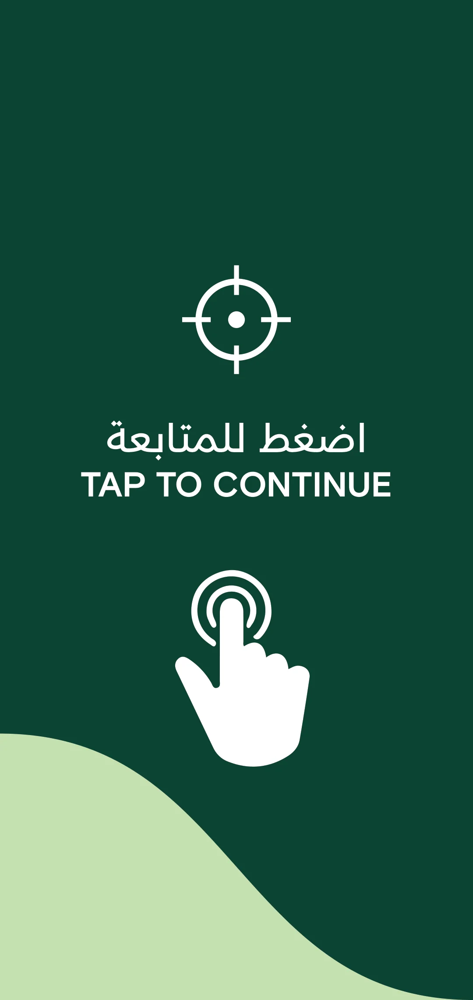
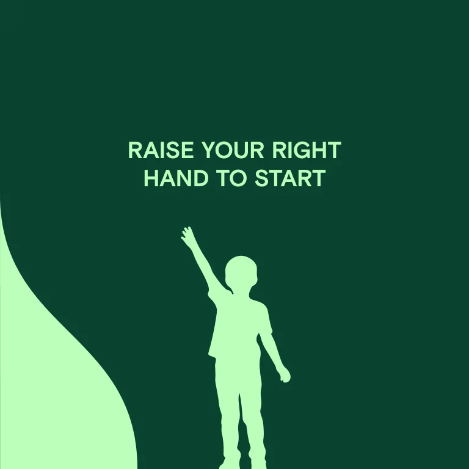
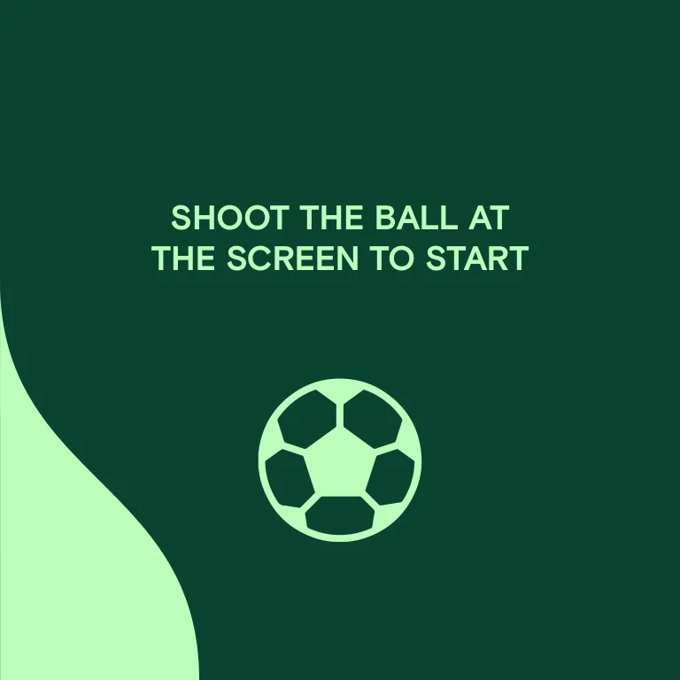

Large action icons
The complete slingshot artboard combines Arabic and English continue copy with targeting and touch symbols.
Touch, gesture and ball input in a shared visual language.
Explore the story
Explain distinct first actions while keeping an exhibition's interfaces consistent.
Large icons demonstrate tapping, raising a hand and shooting a ball. Dark-green fields and pale-green graphics connect the complete start screens across their different proportions.
The complete slingshot artboard combines Arabic and English continue copy with targeting and touch symbols.
The paragliding start artboard uses a raised-hand silhouette; the penalty-shot start artboard uses a football symbol and screen-directed instruction.
Only the isolated company-header vector paths were removed from private native derivatives; every changed pixel lies within the recorded header bounds.
Explore the complete compositions and interface states. Select any image for a closer look.
03 / PROJECT IMAGES
Select a view to explore.
Tall green start screen with a crosshair, bilingual tap-to-continue instruction and a tapping-hand icon.
Complete companion native gesture view for onboarding for three exhibition interactions.

Complete companion native ball-start view for onboarding for three exhibition interactions.

Structure, interaction and visual decisions that give the work its character.
RoleContribution awaiting confirmation
AssetsPrivate evidence draft. Individual contribution, implementation and public-use permission remain unverified. Saved source artwork does not establish personal authorship or original modeling. Supplied, licensed, collaborator and AI-assisted components require separate attribution. The source is a multi-activity exhibition collection. This record is limited to three start-screen components. Battak artwork in the same collection overlaps the already prepared P130 source family and is deliberately excluded from this gallery media set.
StatusPrivate native-artwork draft; contribution, implementation and public use unverified